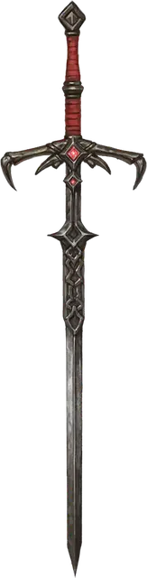

Меч Каса
Sword of Kas
Оружие (Длинный меч), артефакт (требуется настройка)

Кас был могущественным воином, служившим Векне, и его преданность была вознаграждена этим мечом. По мере того, как росла сила Каса, росла и его гордыня. Меч подстрекал Каса уничтожить Векну и захватить его трон. Согласно легенде, Векна погиб от руки Каса, но и Векна уничтожил бунтовщика, оставив лишь меч.
Жажда крови. Меч жаждет крови. Еслив течение 1 минуты после извлечения из ножен меч не вкусит крови, его носитель должен совершить спасбросок Харизмы Сл 15; при успехе носитель получает 3к6 Психического урона, а при провале подчиняется мечу, как если подвержен действию заклинания Подчинение монстра, и меч требует крови. Эффект заклинания прекращается, когда требование меча выполнено.
Магическое оружие. Вы получаете бонус +3 к броскам атаки и урона, совершаемым с этим мечом. Критическое попадание этим мечом совершается при выпадении 19 или 20 на кости к20 броска атаки; кроме того, меч наносит 2к10 дополнительного Рубящего урона существам-Нежити.
Случайные свойства. Меч обладает следующими случайными свойствами:
1 малое положительное свойство
1 основное положительное свойство
1 малое отрицательное свойство
1 основное отрицательное свойство
Заклинания. Пока меч находится при вас, вы можете сотворять с его помощью следующие заклинания (Сл спасброска 18):
Как только вы сотворили заклинание с помощью меча, вы не можете сотворить это заклинание с помощью меча снова до следующего рассвета.
Дух Каса. Пока меч находится при вас, вы получаете следующие преимущества:
Жажда битвы. Вы добавляете 1к10 к броскам Инициативы.
Меч-защитник. Когда вы совершаете атаку этим оружием в рамках действия, вы можете перенести бонус атаки меча, частично или полностью, в ваш Класс Защиты. Этот эффект сохраняется до начала вашего следующего хода.
Сопротивление Некротическому урону. У вас есть Сопротивление Некротическому урону.
Разум. Меч Каса — Хаотичное Злое разумное оружие, с Интеллектом 15, Мудростью 13 и Харизмой 16. Он обладает слухом и Тёмным зрением дальностью 120 футов.
Оружие общается с своим владельцем телепатически и говорит на Общем языке.
Личность. Цель меча — уничтожение Векны. Убийство поклонников Векны, уничтожение творений лича и срыв его планов помогают достичь этой цели.
Меч также стремится уничтожать осквернённых Глазом и Рукой Векны.
Уничтожение меча. Существо, настроившееся одновременно на Глаз Векны и Руку Векны, может использовать Желание этих объединённых Артефактов для уничтожения Меча Каса, при условии, что меч находится в пределах 30 футов. При сотворении Желания существо должно совершить спасбросок Харизмы Сл 18: при провале ничего не происходит, а заклинание Желание теряется; при успехе Меч Каса уничтожается.